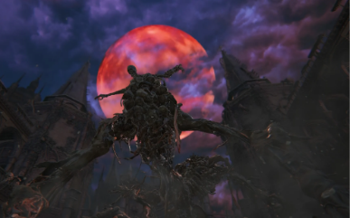
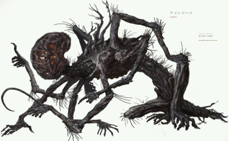

Bloodborne, obra prima da FromSoftware, nos transporta para a gótica cidade de Yharnam, um lugar
aterrorizante e cheio de mistérios. A experiência de jogo é marcante, com uma atmosfera densa e
desafiadora que cativa tanto os fãs de Soulsborne quanto os novos jogadores.
Uma Imersão Sombria e Desafiante
A atmosfera gótica e a trilha sonora memorável contribuem para uma imersão profunda no mundo do jogo.
Yharnam é um labirinto sombrio e cheio de detalhes, com áreas que se conectam de forma natural e criativa.
As criaturas de Bloodborne são verdadeiramente aterrorizantes e memoráveis, com designs únicos e bizarros
que evocam um sentimento de nojo e fascínio.
Gameplay: Uma Dança Entre a Vida e a Morte
Pontos Positivos:
Combate Ágil e Punitivo: O sistema de combate de Bloodborne é rápido,
exigindo que o jogador seja proativo e agressivo. A esquiva é fundamental para sobreviver aos ataques
dos inimigos, e a janela de oportunidade para contra-atacar é curta, recompensando jogadores com
reflexos rápidos.
Variedade de Armas e Habilidades: O arsenal de Bloodborne é vasto e
diversificado, permitindo que os jogadores experimentem diferentes estilos de jogo. As armas
transformam-se, adquirindo novas propriedades e ataques especiais, incentivando a experimentação.
Níveis Desafiadores e Design de Níveis Intuitivo: Os níveis de Bloodborne
são labirínticos e interconectados, incentivando a exploração e a descoberta. A dificuldade é elevada,
mas os desafios são justos e recompensadores.
Sistema de Progressão Interessante: O sistema de progressão de Bloodborne é
único, permitindo que os jogadores personalizem seus personagens de acordo com seu estilo de jogo. O uso
de sangue para aumentar as estatísticas e adquirir novas habilidades adiciona profundidade à
experiência.
Pontos Negativos:
Curva de Aprendizado Aínda Mais Íngreme: Comparado a outros jogos da
FromSoftware, Bloodborne apresenta uma curva de aprendizado ainda mais íngreme, especialmente para
jogadores novos no gênero. A agilidade e a agressividade necessárias para vencer os inimigos podem ser
frustrantes no início.
Câmara às Vezes Inconveniente: A câmera, embora geralmente eficiente, pode
ser um obstáculo em alguns momentos, dificultando a visualização de inimigos ou de áreas importantes.
O Desenvolvimento de Bloodborne
Bloodborne é um jogo que transcende os limites do gênero Soulsborne, oferecendo uma experiência única e
memorável. Mas qual foi o caminho percorrido até a criação desse mundo sombrio e desafiador? Vamos
mergulhar nas curiosidades, desafios e influências que moldaram o desenvolvimento de Bloodborne.
Curiosidades e Acontecimentos
Da Escuridão à Luz: Inicialmente, Bloodborne era um projeto mais focado em
elementos fantásticos e mitológicos. No entanto, a equipe de desenvolvimento decidiu abraçar um visual
mais gótico e Lovecraftiano, o que resultou na atmosfera sombria e opressiva que conhecemos.
Um Novo Motor Gráfico: Para dar vida ao mundo de Yharnam, a FromSoftware
desenvolveu um novo motor gráfico, o que exigiu um grande investimento de tempo e recursos. Essa
decisão, embora desafiadora, permitiu que a equipe criasse visuais impressionantes e efeitos de
iluminação que contribuíram para a imersão do jogador.
Influência de Demon's Souls: Bloodborne foi fortemente influenciado por
Demon's Souls, o primeiro jogo da série Souls. Muitos elementos de gameplay, como o sistema de combate e
a progressão do personagem, foram adaptados e aprimorados para criar uma experiência ainda mais
visceral.
Desafios de Desenvolvimento: Como todo grande projeto, o desenvolvimento de
Bloodborne enfrentou diversos desafios. Um dos maiores obstáculos foi encontrar o equilíbrio perfeito
entre a dificuldade e a acessibilidade, garantindo que o jogo fosse desafiador sem ser frustrante.
A Lore de Bloodborne e a Influência de Lovecraft
A lore de Bloodborne é rica e complexa, repleta de mistérios e horrores cósmicos. A influência de H.P.
Lovecraft é evidente em diversos aspectos do jogo:
A Cidade de Yharnam: Inspirada em cidades góticas europeias, Yharnam é um
personagem à parte na história de Bloodborne. A cidade é um labirinto de ruas estreitas e becos escuros,
repleta de criaturas grotescas e segredos sombrios.
A Doença: A doença que assola Yharnam é uma metáfora para a corrupção e a
decadência da humanidade. A busca por uma cura para essa doença é o motor central da narrativa.
Os Monstros: Os monstros de Bloodborne são criaturas bizarras e
aterrorizantes, muitas vezes inspiradas nos mitos de Cthulhu. Cada criatura representa um aspecto
diferente da doença e do horror cósmico.
Os Deuses Antigos: A lore de Bloodborne faz referência a deuses antigos e
poderosos, que exercem uma influência sinistra sobre o mundo. Esses seres são responsáveis pela criação
dos monstros e pela propagação da doença.
A influencia de LoveCraft
A influência de Lovecraft em Bloodborne vai além da mera inspiração visual
O autor norte-americano explorou temas como a loucura, o horror cósmico e a insignificância da
humanidade diante de forças superiores, temas que ressoam profundamente na narrativa de Bloodborne. A
FromSoftware conseguiu capturar a essência da obra de Lovecraft e transformá-la em uma experiência de
jogo única e memorável.


Videos sobre
Aqui estarão alguns videos sobre o jogo caso tenha se entereçado:
Lore do jogo
Bosses
Finais
Explicação dos finais
Caso querira comprar
Infelizmente, BloodBorne é um exclusivo da playstation o tornando impossivel de jogar no PC ou em outros
consoles, no PC ainda a esperança pois o jogo pode ser relançado com ja aconteceu com outros exclusivos
como God of War e Ghost of Tsushima.
Mas caso tenha um playstation e deseja comprar os links para o jogo base e a versão com a dlc estão logo
a baixo